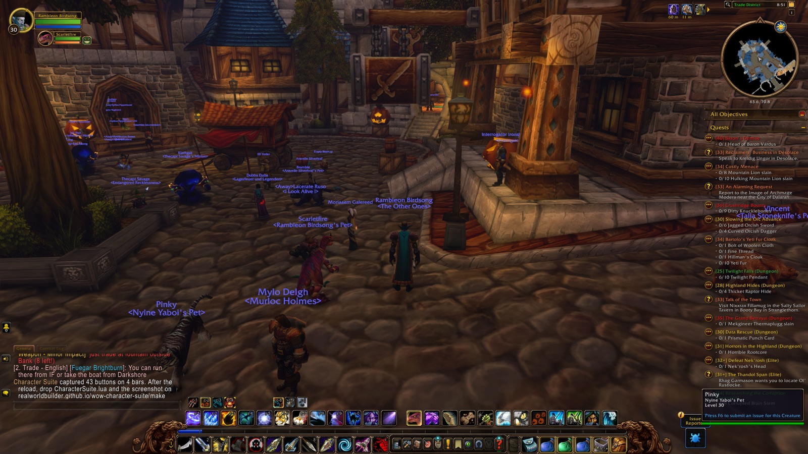
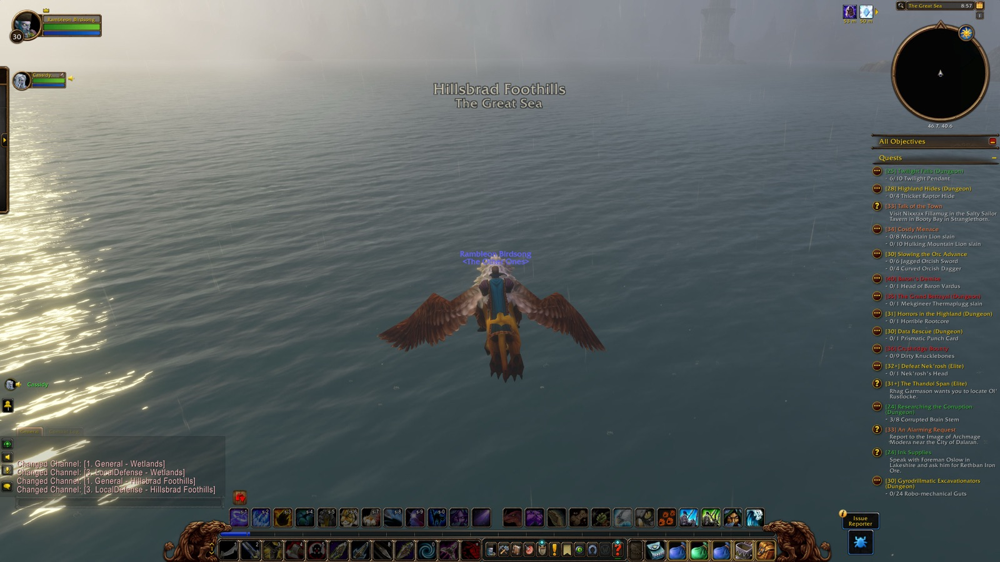
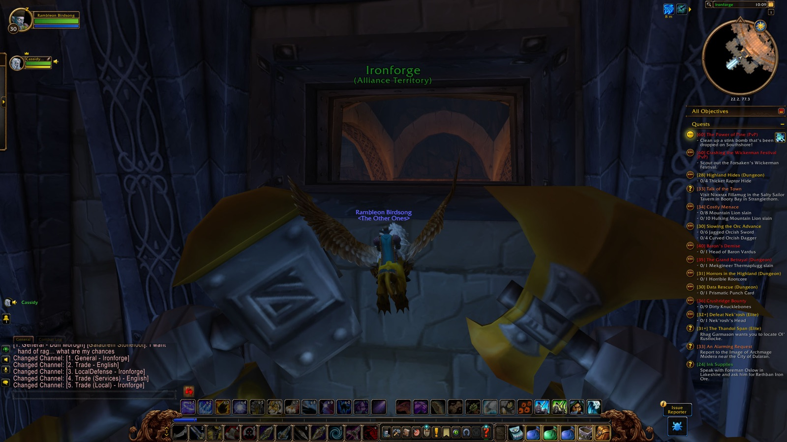

Rambleon Birdsong was eight levels into his life on Azeroth when this record opens, a young hunter still finding the shape of his own competence among the roots of Teldrassil. Over twenty-eight nights, from the twenty-first of September to the nineteenth of October, he walked and sailed and flew his way to thirty, keeping notes as he went — sparse ones, mostly, but honest. What follows is not the quickest road or the wisest one. It is only his: the lakes he fished monsters out of, the companions who rode beside him for an hour or a night, the cities he passed through without lingering, and the deaths that taught him nothing he wrote down except that they had happened. Walk it as he walked it, in order, and you will have walked his Azeroth.
1TeldrassilLevel 8–9
He began at Dolanaar, still new enough to count his levels like coins. The notes from that first night are thin but telling — "alone at the lake slayin timberlings," he wrote of Lake Al'Ameth, and there is a particular satisfaction in that line, the quiet pride of a hunter who did not need company to be useful. Hazardelf and Tiamaat crossed his path there and at Starbreeze Village, where the troubling breeze that had worried the village was finally laid to rest. Gnarlpine warriors and ursa, webwood lurkers, nightsabers and the bandit Xethorr the Wicked all fell to his bow in turn. By the lake's edge he passed into level nine, the Cleft behind him and Dolanaar's errands cleared from his ledger.
- Picked up
- Seek Redemption!, Gnarlpine Corruption, Timberling Sprouts, Timberling Seeds, Rellian Greenspyre, The Relics of Wakening
- Turned in
- Zenn's Bidding (level 8), A Troubling Breeze (Starbreeze Village, level 8), Denalan's Earth (Lake Al'Ameth, level 8), Timberling Sprouts (Lake Al'Ameth, level 8), Timberling Seeds (Lake Al'Ameth, level 8), Seek Redemption! (level 9), Gnarlpine Corruption (Dolanaar, level 9), Twisted Hatred (Dolanaar, level 9), Bounty: Gnarlpine Furbolg (level 9)
- Reached
- level 9 (Lake Al'Ameth)
- First met in combat
- Nightsaber, Webwood Lurker, Gnarlpine Gardener, Gnarlpine Warrior, Gnarlpine Ursa, Timberling, Lasher Sproutling, Befouled Webwood, Xethorr the Wicked
- Company
- Hazardelf, Tiamaat
- “alone at the lake slayin timberlings” (Chapter 1)
2DarnassusLevel 9
The road home to Darnassus was brief, little more than an errand through Teldrassil's canopy and into the capital's quiet terraces. He walked the Warrior's Terrace and the Cenarion Enclave with Tiamaat still at his side, closing out business with Rellian Greenspyre and picking up word of tumors troubling the land he'd soon return to treat. There was no fighting here, no need for his bow — only the business of a capital city, conducted in under three hours, a pause rather than a chapter. Darnassus asked nothing of him but his presence, and he gave it gladly before turning back toward the island that still had more to teach him.
- Picked up
- Tumors
- Turned in
- Rellian Greenspyre (Cenarion Enclave, level 9)
- Company
- Tiamaat
3TeldrassilLevel 9–11
Back among the roots, he found new country: the Oracle Glade, the Wellspring River and its lake, each with its own small dramas waiting. He took up the taming of beasts — three times over, by the record — and worked the Great Tree's fronds and recipes between bouts of fighting strigid hunters, elder nightsabers, and the harpies of Bloodfeather clan. Bird joined him for part of the stretch. Two levels came in this run, ten at the Wellspring River and eleven in Dolanaar itself, the latter worth a picture, worth remembering. The glade and the lake took their toll too — three deaths between them, unremarked in the notes beyond the fact of their happening — before he turned once more toward Darnassus.

- Picked up
- Not Dead Yet, The Enchanted Glade, Darkness in the Glade, Taming the Beast ×3, The Great Tree Provides, The Shimmering Frond, Recipe of the Kaldorei, Training the Beast
- Turned in
- The Lost Runner (The Oracle Glade, level 9), The Enchanted Glade (The Oracle Glade, level 10), Not Dead Yet (Dolanaar, level 10), Taming the Beast ×3 (Dolanaar, level 10), Camping 101: Cooking (Dolanaar, level 10), Recipe of the Kaldorei (Dolanaar, level 10), The Shimmering Frond (Lake Al'Ameth, level 10), The Sprouted Fronds (Lake Al'Ameth, level 10)
- Reached
- level 10 (Wellspring River), level 11 (Dolanaar)
- First met in combat
- Strigid Hunter, Elder Nightsaber, Timberling Trampler, Timberling Mire Beast, Bloodfeather Rogue, Bloodfeather Sorceress, Bloodfeather Harpy, Webwood Silkspinner, Blooming Lasher, Elder Timberling, Lady Sathrah, Feral Nightsaber
- Deaths
- 3 (Wellspring River, The Oracle Glade)
- Company
- Bird
4DarnassusLevel 11
Only eighteen minutes this time, but eighteen minutes in which something of the place settled into him. "I really like darnassus," he wrote, "very calm. never overcrowded," and it reads like a hunter exhaling after the glades and lakes of Teldrassil, finding in the capital's terraces a stillness he did not get in the wild. He closed the matter of the tumors at the Cenarion Enclave, saw to his training, and stood long enough at the Temple of the Moon to turn in the tears gathered there. Two pictures mark the visit — one at the gate, one in the enclave itself — small proofs that the calm had been worth noting.

- Picked up
- Nessa Shadowsong, Return to Denalan, Sathrah's Sacrifice
- Turned in
- Tumors (Cenarion Enclave, level 11), Training the Beast (level 11), Tears of the Moon (Temple of the Moon, level 11)
- “i really like darnassus... very calm. never overcrowded” (Chapter 3)
5TeldrassilLevel 11–13
This was the longest night yet on the island, nearly six hours threading through Shadowglen, Aldrassil, the Ban'ethil warrens and back to the Oracle Glade. The company grew crowded and good — Cassidy, Aurel, Vamshi, Titania, Kaeds, Dread, Abbey, Lepoof, Highlord all passed through his company at one point or another, more names in one stretch than the whole journey before it. He delivered the fang of Githyiss, answered Tenaron's summons, and went down into the Barrow Den to face the sleeping druid and the one who tended him, Druid of the Claw — a den that cost him once, a single death there before level twelve. The dream-eater Ferocitas and the mauler Ursal fell in turn, and by the glade's heart he reached thirteen. "Turning in a couple quests then turning in for the night," he wrote, and the night earned its rest.

- Picked up
- Fang of Githyiss, Tenaron's Summons, Crown of the Earth ×5, Oakenscowl, Easing Suffering, The Sleeping Druid, Druid of the Claw, Ursal the Mauler, Ferocitas the Dream Eater, The Glowing Fruit, The Oracle Tree, Teldrassil
- Turned in
- Webwood Egg (Aldrassil, level 11), Fang of Githyiss (Aldrassil, level 11), Tenaron's Summons (Aldrassil, level 11), Crown of the Earth ×4 (Dolanaar, level 12), Return to Denalan (Lake Al'Ameth, level 11), Oakenscowl (Lake Al'Ameth, level 11), The Great Tree Provides (Dolanaar, level 11), The Sleeping Druid (Ban'ethil Barrow Den, level 12), Druid of the Claw (Ban'ethil Barrow Den, level 12), The Relics of Wakening (Dolanaar, level 12), The Emerald Dreamcatcher (Dolanaar, level 12), Ferocitas the Dream Eater (Dolanaar, level 12), The Glowing Fruit (Lake Al'Ameth, level 12), Ursal the Mauler (Dolanaar, level 12), Darkness in the Glade (The Oracle Glade, level 12), The Oracle Tree (The Oracle Glade, level 13), Easing Suffering (The Oracle Glade, level 13)
- Reached
- level 12 (Ban'ethil Barrow Den), level 13 (The Oracle Glade)
- First met in combat
- Webwood Venomfang, Timberling Trampler, Oakenscowl, Timberling Bark Ripper, Lasher Sproutling, Nightsaber Stalker, Gnarlpine Shaman, Gnarlpine Defender, Gnarlpine Augur, Rageclaw, Ferocitas the Dream Eater, Gnarlpine Mystic
- Deaths
- 1 (Ban'ethil Barrow Den)
- Company
- Cassidy, Aurel, Vamshi, Titania, Kaeds, Dread, Abbey, Lepoof, Highlord
- “turning in a couple quests then turning in for the night” (Chapter 4)
6DarnassusLevel 13
Ten quiet minutes, the kind that barely register against the nights either side of them. He crossed the Warrior's Terrace and the Craftsmen's Terrace to the Cenarion Enclave, picked up word of a grove of the ancients still waiting on his attention, and turned in the matter of Teldrassil itself — a tidy close to the island's long chapter, even if the island was not quite finished with him yet. A single picture marks the entrance, nothing more dramatic than a hunter walking into his own capital, calm as ever, exactly as he liked it.

- Picked up
- Grove of the Ancients
- Turned in
- Teldrassil (Cenarion Enclave, level 13)
7TeldrassilLevel 13
One minute only, little more than a step through Rut'theran Village with the Veiled Sea stretching out beyond the harbor. He settled the matter of Nessa Shadowsong and the bounty of Teldrassil here, and picked up passage — a flight to Auberdine — that would carry him off the island he'd called home since level eight. It was not a stretch for lingering. The ferry and the open water were waiting, and Teldrassil, for now, was behind him.
- Picked up
- The Bounty of Teldrassil, Flight to Auberdine
- Turned in
- Nessa Shadowsong (Rut'theran Village, level 13), The Bounty of Teldrassil (Rut'theran Village, level 13)
8DarkshoreLevel 13–15
Darkshore opened wide after the close corridors of Teldrassil — the Veiled Sea giving way to Auberdine's docks, the Long Wash, the twilight-touched vale and shore that gave the region half its names. He fished sea creatures and turtles from the shallows, chased down the gnome Buzzbox's scattered parts, and worked his way inland to the ruins at Bashal'Aran and the fallen tower of Ameth'Aran, where he and Strafhe, Banne, and Cassidy stood against moonstalkers and the raiders of the Blackwood clan. It was a costly eight hours — ten deaths scattered across the vale, the excavation, and the tower, more than any stretch before it — but it carried him through two levels, fourteen in Darkshore proper and fifteen at Ameth'Aran, each one marked with a picture he'd pause to take.

- Picked up
- Washed Ashore ×2, Return to Nessa, WANTED: Jai'vhanel, Cave Mushrooms, The Red Crystal, Buzzbox 827, For Love Eternal, The Family and the Fishing Pole, Beached Sea Turtle, Buzzbox 411, Plagued Lands, How Big a Threat? ×2, The Tower of Althalaxx ×3, Deep Ocean, Vast Sea, Bashal'Aran ×4, Tools of the Highborne, Expanding Horizons, Thundris Windweaver, The Cliffspring River, Beached Sea Creature, Buzzbox 323, As Water Cascades, The Fall of Ameth'Aran, WANTED: Murkdeep!, Fruit of the Sea, The Absent Minded Prospector, The Blackwood Corrupted
- Turned in
- Flight to Auberdine (Auberdine, level 13), Washed Ashore ×2 (Auberdine, level 13), Grove of the Ancients (Grove of the Ancients, level 13), Buzzbox 827 (Auberdine, level 13), Beached Sea Turtle (Auberdine, level 13), How Big a Threat? (Auberdine, level 13), Thundris Windweaver (Auberdine, level 13), Buzzbox 411 (Mist's Edge, level 14), Deep Ocean, Vast Sea (Auberdine, level 14), Beached Sea Creature (Auberdine, level 14), Bashal'Aran ×3 (Bashal'Aran, level 14), The Red Crystal (Auberdine, level 14), The Fall of Ameth'Aran (Twilight Vale, level 15), Tools of the Highborne (Auberdine, level 15), The Tower of Althalaxx ×2 (level 15), The Cliffspring River (Auberdine, level 15)
- Reached
- level 14 (Darkshore), level 15 (Ameth'Aran)
- First met in combat
- Greymist Raider, Greymist Coastrunner, Pygmy Tide Crawler, Young Reef Crawler, Greymist Seer, Moonstalker, Rabid Thistle Bear, Grizzled Thistle Bear, Blackwood Windtalker, Blackwood Pathfinder, Darkshore Thresher, Moonstalker Runt
- Deaths
- 10 (Twilight Vale, Remtravel's Excavation, Mist's Edge, Bashal'Aran, Tower of Althalaxx)
- Company
- Strafhe, Banne, Cassidy
9TeldrassilLevel 15
A short return across the water, through Darnassus and out again to Rut'theran Village, long enough only to close the account with Nessa Shadowsong. Two pictures mark the crossing — one at Teldrassil's edge, one at the capital's gate — the small bureaucracy of travel that every road through these islands seemed to require. Nineteen minutes, no fighting, no company recorded. Just a hunter passing through on his way back to unfinished business.

- Turned in
- Return to Nessa (Rut'theran Village, level 15)
10DarkshoreLevel 15–17
Back to Darkshore for the better part of eight hours, and this time the company was wide and changing — Caerwyn, Reighna, Elentria, Softtaco, Menos, Cassidy, Noseeum moving in and out of his nights. He hunted sea creatures and turtles again, cleared the infection troubling Auberdine, carried hope to Tharnariun, and went into Blackwood Den itself for the lost masters hiding there, a den that claimed six deaths between it and the twilight shore before the work was done. The furbolg Murkdeep fell to him somewhere in those hours too. Two levels came of it — sixteen at Bashal'Aran, seventeen at Twilight Vale — each one worth stopping to capture, a hunter's quiet accounting of how far he'd come since the lake at Al'Ameth.

- Picked up
- Beached Sea Creature ×2, Beached Sea Turtle ×2, Plagued Lands, Cleansing of the Infected, Buzzbox 525, Tharnariun's Hope, Trek to Ashenvale, A Lost Master ×2, Escape Through Force
- Turned in
- Beached Sea Creature ×2 (Auberdine, level 15), Beached Sea Turtle ×2 (Auberdine, level 16), WANTED: Murkdeep! (Auberdine, level 15), The Blackwood Corrupted (Auberdine, level 16), Plagued Lands (Auberdine, level 16), Buzzbox 323 (Cliffspring River, level 16), Fruit of the Sea (Auberdine, level 16), Cleansing of the Infected (Auberdine, level 16), Tharnariun's Hope (Auberdine, level 16), How Big a Threat? (Auberdine, level 16), Buzzbox 525 (Twilight Vale, level 17), For Love Eternal (Auberdine, level 17), WANTED: Jai'vhanel (Auberdine, level 17), A Lost Master ×2 (Blackwood Den, level 17), Bashal'Aran (Bashal'Aran, level 17)
- Reached
- level 16 (Bashal'Aran), level 17 (Twilight Vale)
- First met in combat
- Tide Crawler, Greymist Seer, Greymist Netter, Reef Crawler, Greymist Warrior, Murkdeep, Greymist Hunter, Greymist Tidehunter, Moonstalker Runt, Moonstalker, Blackwood Warrior, Rabid Thistle Bear
- Deaths
- 6 (Twilight Shore, Blackwood Den)
- Company
- Caerwyn, Reighna, Elentria, Softtaco, Menos, Cassidy, Noseeum
11AshenvaleLevel 17
Nine minutes at the border, Maestra's Post and Astranaar barely more than waypoints. He closed the business of the tower at Althalaxx, picked up word of the Zoram Strand and trouble brewing in Stonetalon, and reported his trek to Ashenvale complete — Cassidy still with him. A single picture marks the crossing into new country, the kind of threshold a hunter notices even when he doesn't linger on it.

- Picked up
- The Tower of Althalaxx, The Zoram Strand, On Guard in Stonetalon
- Turned in
- The Tower of Althalaxx (Maestra's Post, level 17), Trek to Ashenvale (Astranaar, level 17)
- Company
- Cassidy
12DarkshoreLevel 17
He turned back to Darkshore once more, two and a half hours among the familiar vales and washes, Tina, Cassidy, and Papa sharing the road with him. The moonstalkers here had grown bolder — a matriarch, a sire, a den mother among them — and the twilight cultists at the Master's Glaive cost him a death before he moved on. The escape of one Therylune came onto his ledger here, unfinished business for later. A picture of the crossing is the only image this stretch left behind.

- Picked up
- Therylune's Escape
- First met in combat
- Moonstalker, Blackwood Warrior, Den Mother, Twilight Disciple, Twilight Thug, Moonstalker Matriarch, Moonstalker Runt, Moonstalker Sire
- Deaths
- 1 (The Master's Glaive)
- Company
- Tina, Cassidy, Papa
13AshenvaleLevel 17–18
Back into Ashenvale for a longer stay, Papa and later Karis beside him as he worked through the ruins of Ordil'Aran toward the Shrine of Aessina. The fighting here turned darker than the furbolgs and moonstalkers he'd grown used to — dark strand cultists, voidwalkers, felslayers, and at the end of it a demon lord, Ilkrud Magthrull, worth the name even in a bare list of foes. Five deaths marked the passage, scattered across the shrine and the fire scar beyond it, more than he'd lost in any single Ashenvale stretch yet. But the shrine gave him level eighteen in return, and a picture to remember it by, and the tower at Althalaxx was closed out once more before the night ended.

- Picked up
- The Tower of Althalaxx
- Turned in
- The Tower of Althalaxx (Maestra's Post, level 17)
- Reached
- level 18 (The Shrine of Aessina)
- First met in combat
- Dark Strand Cultist, Voidwalker Minion, Dark Strand Adept, Wildthorn Stalker, Ghostpaw Runner, Felslayer, Lesser Felguard, Ilkrud Magthrull
- Deaths
- 5 (Ashenvale, The Shrine of Aessina, Fire Scar Shrine)
- Company
- Papa, Karis
14DarkshoreLevel 18
An hour back in Darkshore, Cassidy and Karis still with him, though the record keeps no quest, no kill, no death from this quiet span — only the fact of the company and the ground they covered together, Auberdine and the Long Wash and the twilight shore passing beneath their boots. Not every hour on the road makes a story. Some are simply walked.
- Company
- Cassidy, Karis
15AshenvaleLevel 18
A fuller stretch, over two hours ranging from the Zoram Strand to Lake Falathim and the Shrine of Aessina, with a swing homeward through Darkshore, Teldrassil, and Darnassus along the way. He answered Raene's call for cleansing three times over at a moonwell, closed the Zoram Strand's business at Astranaar, and met the wrathtail naga of the strand and the Ashenvale bears of the deeper woods for the first time. The lake and the open country of Ashenvale cost him three deaths, but the pictures he took — crossing into Ashenvale, into Teldrassil, into Darnassus — mark a night more about movement than any single fight.

- Picked up
- Journey to Stonetalon Peak, Raene's Cleansing ×4, Culling the Threat, The Tower of Althalaxx, Pridewings of Stonetalon, An Aggressive Defense, Unrequited Love, Researching the Corruption, In Search of Thaelrid
- Turned in
- The Tower of Althalaxx (Maestra's Post, level 18), Raene's Cleansing ×3 (Moonwell, level 18), The Zoram Strand (Astranaar, level 18)
- First met in combat
- Ghostpaw Runner, Saltspittle Muckdweller, Wrathtail Wave Rider, Wrathtail Sorceress, Wrathtail Razortail, Wildthorn Stalker, Ashenvale Bear, Saltspittle Puddlejumper, Saltspittle Warrior
- Deaths
- 3 (Lake Falathim, Ashenvale)
16DarkshoreLevel 18
A brief half hour, Chud for company, carrying him back through the Veiled Sea and Mist's Edge toward the Master's Glaive, with a glimpse of the Barrens caught along the way and marked with a picture. A moonstalker sire crossed his path once more. But what the night is remembered for is the line he wrote afterward, weighing the road still ahead: "a long walk on the long wash is in order" — the plain, tired honesty of a hunter who knew exactly how far his feet still had to carry him.

- First met in combat
- Moonstalker Sire
- Company
- Chud
- “a long walk on the long wash is in order” (Chapter 7)
17The BarrensLevel 18
Nineteen minutes in red country, a world away from the green he'd known. The Mor'shan Rampart and the Gold Road carried him toward the Crossroads, hyenas and plainstriders his first taste of the Barrens' wildlife. It cost him a single death, unremarked, before he pressed on. There is something in a first step onto new ground that no amount of brevity can quite erase, even when the record itself is this thin.
- First met in combat
- Hecklefang Hyena, Ornery Plainstrider
- Deaths
- 1 (The Barrens)
18Stonetalon MountainsLevel 18–19
Kancho and Cassidy rode with him into the mountains, where the greatwood vale gave way to windshear crag and the lake country beyond. He guarded the camps along Webwinder Path, helped an old colleague, and faced down venture company loggers and deforesters clearing ground that wasn't theirs. The pridewings proved a harder lesson — hunting wyverns demands a hunter's patience, and he knew it: "patience is key with pridewings," he wrote, a small craft note earned the hard way. Level nineteen came at Blackwolf River, worth its own picture, before he climbed on toward Stonetalon Peak to settle the matter of his journey there.

- Picked up
- On Guard in Stonetalon, A Gnome's Respite, Super Reaper 6000, An Old Colleague, A Scroll from Mauren
- Turned in
- On Guard in Stonetalon ×2 (Webwinder Path, level 18), A Gnome's Respite (Webwinder Path, level 19), Journey to Stonetalon Peak (Stonetalon Peak, level 19)
- Reached
- level 19 (Blackwolf River)
- First met in combat
- Deepmoss Venomspitter, Venture Co. Deforester, Venture Co. Logger, Pridewing Wyvern, Pridewing Consort, Blackened Basilisk, Sap Beast
- Company
- Kancho, Cassidy
- “patience is key with pridewings” (Chapter 8)
19AshenvaleLevel 19
Six minutes only, a glance back through the Veiled Sea and the Zoram Strand to Astranaar, where the business of the pridewings was finally closed out. A single picture marks the brief return to Ashenvale's familiar paths — a hunter tidying loose ends before moving on to whatever came next.

- Turned in
- Pridewings of Stonetalon (Astranaar, level 19)
20DarkshoreLevel 19
Twenty-eight minutes through the twilight vale and shore, down the Long Wash to Auberdine and the excavation beyond, Raín and Is sharing the walk with him. Here he met something new to this coast — cracked golems and stone behemoths, gravelflint scouts and geomancers, mechanical things where he'd grown used to beasts and bandits. A picture marks the crossing, the only record of a short, strange detour into Darkshore's buried corners.

- First met in combat
- Cracked Golem, Gravelflint Scout, Stone Behemoth, Gravelflint Geomancer
- Company
- Raín, Is
21Blackfathom DeepsLevel 19
Through Darkshore, Ashenvale, and Teldrassil he came at last to the drowned sacellum beneath the waves, his first dungeon proper. Murlocs and skittering things of the deep met him in the dark — murkshallow snapclaws, blindlight things that didn't belong under any sky. It cost him two deaths, the kind of toll a first dungeon takes without explanation, but he came away with knowledge of the deeps worth carrying, and pictures of both the entrance and his eventual return to Teldrassil's light.

- Picked up
- Knowledge in the Deeps
- First met in combat
- Murkshallow Snapclaw, Skittering Crustacean, Blindlight Murloc
- Deaths
- 2 (The Drowned Sacellum, Blackfathom Deeps)
- Instances
- Blackfathom Deeps
22Stormwind CityLevel 19
Elwynn Forest opened onto Stormwind's harbor, and for the first time in this record, a human city. He walked the canals and Cathedral Square, closed out the matter of expanding horizons, and delivered a scroll to a mage in the Mage Quarter, picking up work that would carry him south — devils in Westfall, a retrieval, a task for one Elmore. Three pictures mark the day: the harbor, a moment in Cathedral Square, and the edge of Elwynn beyond. A long way, in every sense, from Dolanaar.

- Picked up
- Making Do, Humble Beginnings, Devils in Westfall, Retrieval for Mauren, Elmore's Task, Gold Dust Exchange
- Turned in
- Expanding Horizons (Cathedral Square, level 19), A Scroll from Mauren (Mage Quarter, level 19)
23WestfallLevel 19
Westfall's dust was a different country again — the Jansen Stead, Saldean's Farm, Sentinel Hill standing watch over fields gone to seed. He fought off harvest watchers and dust devils, riverpaw brutes and bandits thick with the Defias trouble that seemed to run through everything here, and closed Westfall's stew before the end of the stretch. One death came of it, unremarked. Pictures at the entrance and at Sentinel Tower mark a hunter taking stock of a harder, poorer land than any he'd walked before.

- Picked up
- Westfall Stew, Poor Old Blanchy, The Forgotten Heirloom, The Killing Fields, Harvesting the Harvesters, The Defias Brotherhood, The People's Militia, Patrolling Westfall, Red Leather Bandanas
- Turned in
- Westfall Stew (Saldean's Farm, level 19)
- First met in combat
- Harvest Watcher, Dust Devil, Goretusk, Riverpaw Brute, Riverpaw Bandit
- Deaths
- 1 (Westfall)
24Sentinel TowerLevel 19
Two minutes, a single errand — Westfall's patrol reported complete at the tower, with Duskwood glimpsed and pictured beyond it. Small stretches like this are the connective tissue of a long road: not nothing, but not much more than a doorway passed through on the way to the next one.

- Turned in
- Patrolling Westfall (level 19)
25Stormwind CityLevel 19
Back into the capital for a working twenty-three minutes, down through the Deeprun Tram's threshold and into the Mage Quarter, the Dwarven District, the Royal Library. He closed out the devils of Westfall, settled Elmore's task, found his reading room business done, and picked clean a shelf of what it held. New work piled on in return — deliveries, memories to collect, a matter of a brother unnamed. A single picture marks the tram's entrance, the first hint of the tunnel that would soon carry him somewhere else entirely.

- Picked up
- Special Delivery for Gaxim, Reading Room, Stormpike's Delivery, Underground Assault, Collecting Memories, Oh Brother..., Shelf Picked
- Turned in
- Devils in Westfall (Mage Quarter, level 19), Elmore's Task (Dwarven District, level 19), Reading Room (Royal Library, level 19), Shelf Picked (The Park, level 19)
26DarkshoreLevel 19–20
A shorter return to Darkshore, under an hour and a half, but a full one — Val, Cassidy, Andria, Fanaandel, Koiya, and Artemisa all keeping him company at one point or another through Auberdine, the Long Wash, and the Master's Glaive. He closed the matter of making do, fought his way past grizzled thistle bears and the blackwood warband once more, and lost one night to a single death in the twilight vale. Level twenty came at the Master's Glaive — a milestone worth three pictures, one for the level, one for Teldrassil's threshold, one simply marked in the Veiled Sea, a hunter pausing to look at the water he'd crossed so many times now.

- Picked up
- Escape Through Force, The Powers Below, Therylune's Escape
- Turned in
- Making Do (Auberdine, level 19), Escape Through Force (Auberdine, level 20)
- Reached
- level 20 (The Master's Glaive)
- First met in combat
- Grizzled Thistle Bear, Giant Foreststrider, Moonstalker Sire, Blackwood Warrior, Blackwood Ursa, Blackwood Shaman, Twilight Disciple, Twilight Thug
- Deaths
- 1 (Twilight Vale)
- Company
- Val, Cassidy, Andria, Fanaandel, Koiya, Artemisa
27Stormwind CityLevel 20
Nine minutes back in the capital, through the tram and into the Royal Library, where he spoke of fortitude and came away with word of a Brother Paxton waiting somewhere else. Two pictures — the city's gate, the tram's mouth — bookend a visit too brief to be anything but a waypoint toward Ironforge.

- Picked up
- Speaking of Fortitude, Brother Paxton
- Turned in
- Speaking of Fortitude (Royal Library, level 20)
28Deeprun TramLevel 20
One minute, and yet it earned its own line in the record: "1st train ride," he wrote, and there is something almost tender in that small exclamation held back only by the rule against them — a hunter who had walked and sailed and flown across half of Kalimdor, delighted all the same by a tunnel under the sea. A picture marks the moment, the kind of small marvel that doesn't need a quest attached to matter.

- “1st train ride” (Chapter 9)
29IronforgeLevel 20
Eight minutes among the dwarves, Tinker Town and the Great Forge and the Forlorn Cavern passing beneath him in quick succession. He closed the matter of his old colleague and settled the business of the powers below, picking up a scattering of new errands — a brain to save, a dwarf named Bingles to find — before a single picture marked his entrance to the city of stone and steel.

- Picked up
- Save Techbot's Brain!, Find Bingles, The Day After, Ineptitude + Chemicals = Fun
- Turned in
- An Old Colleague (Tinker Town, level 20), The Powers Below (The Forlorn Cavern, level 20)
30AshenvaleLevel 20
An hour back among Ashenvale's woods, Rip, Ialach, Alourah, and Sertuvius riding with him this time. He closed Therylune's long escape at the Shrine of Aessina and settled an aggressive defense at Astranaar, meeting for the first time the furbolgs of Greenpaw village and its foulweald kin — totemics, shamans, den watchers, more clan names than he'd yet catalogued in one sitting. It cost him a single death, but a picture of the entrance marks a stretch that, on balance, went his way.

- Turned in
- Therylune's Escape (The Shrine of Aessina, level 20), An Aggressive Defense (Astranaar, level 20)
- First met in combat
- Ghostpaw Runner, Wildthorn Stalker, Foulweald Totemic, Foulweald Pathfinder, Foulweald Warrior, Foulweald Den Watcher, Foulweald Ursa, Foulweald Shaman
- Deaths
- 1 (Ashenvale)
- Company
- Rip, Ialach, Alourah, Sertuvius
31Stonetalon MountainsLevel 20
A longer climb this time, over two hours with Cassidy, Arktalis, and Falsila beside him, ranging from Stonetalon Peak down through the charred vale and Webwinder Path. The vale's name was no exaggeration — flame spirits, charred ancients, singed basilisks waiting among the ash — and it cost him seven deaths across the vale and the mountains and the lake, the costliest single stretch of his climb through Stonetalon. He delivered word to Gaxim at Webwinder Path and came away still standing, pictures marking his passage onward through Darkshore, Stormwind, and Elwynn Forest, including one moment paused to remember in the forest itself.

- Picked up
- Reclaiming the Charred Vale
- Turned in
- Special Delivery for Gaxim (Webwinder Path, level 20)
- First met in combat
- Sap Beast, Antlered Courser, Blackened Basilisk, Bloodfury Ambusher, Bloodfury Harpy, Rogue Flame Spirit, Bloodfury Windcaller, Charred Ancient, Singed Basilisk
- Deaths
- 7 (The Charred Vale, Stonetalon Mountains, Mirkfallon Lake)
- Company
- Cassidy, Arktalis, Falsila
32WestfallLevel 20
Back to the dust with Cassidy and Cortonna, nearly two hours through Saldean's Farm and the Dagger Hills and down to Longshore. The Defias had grown bolder in his absence — pillagers, messengers, looters, knuckledusters, pathstalkers and highwaymen all crossing his bow — word of a brewer named Thunderbrew the one new thread picked up. The road led, in the end, to a door he had not opened before: the Deadmines, pictured at the threshold.

- Picked up
- Thunderbrew
- First met in combat
- Riverpaw Taskmaster, Defias Pillager, Defias Messenger, Defias Looter, Defias Knuckleduster, Defias Pathstalker, Defias Highwayman
- Company
- Cassidy, Cortonna
33The DeadminesLevel 20–21
Down into the hideout he went, Dire, Jstermy, and Emchetyre at his side through the mast room and the goblin foundry to Ironclad Cove. It was a dungeon of names — Marisa du'Paige, Rhahk'Zor, the goblin shredder-rider Sneed among the defias and goblins who stood against them — and it cost two deaths, in the mast room and again at the cove, before the last of it fell. Level twenty-one came of it, deep underground, marked with pictures of the foundry and the moment itself: a hunter's pride taken where the sun couldn't reach it.

- Reached
- level 21 (The Deadmines)
- First met in combat
- Defias Digger, Defias Conjurer, Marisa du'Paige, Defias Miner, Defias Evoker, Defias Worker, Defias Overseer, Rhahk'Zor, Defias Watchman, Goblin Woodcarver, Sneed, Sneed's Shredder
- Deaths
- 2 (Mast Room, Ironclad Cove)
- Company
- Dire, Jstermy, Emchetyre
- Instances
- Deadmines
34WestfallLevel 21
Back into the daylight for just over an hour, Cassidy still beside him, through Sentinel Hill and the Dead Acre toward Saldean's Farm. The dead acre lived up to its name — harvest reapers and a greater fleshripper waiting among the rows — before a picture marked his glimpse of Duskwood on the way to wherever came next.

- First met in combat
- Harvest Reaper, Greater Fleshripper
- Company
- Cassidy
35Stormwind CityLevel 21
Ten minutes through Elwynn and into the capital, enough time to close the underground assault in the Dwarven District and pick up word of gyrodrillmatic excavationators waiting to be dealt with. He came away with a pair of armbands worth keeping, a small reward for a brief errand, and a picture of the city gate to mark it.

- Picked up
- Gyrodrillmatic Excavationators
- Turned in
- Underground Assault (Dwarven District, level 21)
- Loot worth keeping
- Bravo's Armbands (Uncommon)
36WestfallLevel 21
Raven joined him for the better part of an hour, ranging wide through Saldean's Farm, Moonbrook, the Dagger Hills, and out to the farmsteads beyond. The killing fields were finally closed, the red bandanas delivered to Sentinel Hill, and the fighting brought good leather home with it — pristine hides, a pair of harvester's pants, a militia cloak all worth the keeping. A note was found and tucked away for later, and the Defias renegades proved tougher company than the common bandits he'd faced before.
- Picked up
- Westfall Stew, ... and that note you found, Report to Gryan Stoutmantle
- Turned in
- The Killing Fields (Saldean's Farm, level 21), Red Leather Bandanas (Sentinel Hill, level 21)
- First met in combat
- Riverpaw Bandit, Riverpaw Brute, Defias Pillager, Defias Pathstalker, Defias Knuckleduster, Goretusk, Defias Highwayman, Defias Renegade Mage, Harvest Watcher
- Loot worth keeping
- Pristine Leather ×2 (Uncommon), Harvester's Pants (Uncommon), Cloak of the People's Militia (Uncommon)
- Company
- Raven
37Sentinel TowerLevel 21
Two minutes, one report delivered — Gryan Stoutmantle informed that the people's militia had their answer — and a picture taken at the tower before he moved on. The smallest stretches of this road were often the ones that tied the larger ones together.

- Picked up
- The People's Militia
- Turned in
- Report to Gryan Stoutmantle (level 21)
38Stormwind CityLevel 21
Ten minutes, one simple errand: the humble beginnings of some larger business closed out at Cathedral Square. No fighting, no company recorded, just the quiet administration of a capital city that had become, by now, a familiar waypoint rather than a destination.
- Turned in
- Humble Beginnings (Cathedral Square, level 21)
39Elwynn ForestLevel 21
Twenty-two minutes through Goldshire and the valley around Northshire, down to the Stonefield farm and Mirror Lake, by way of Westfall and Duskwood. He delivered a brother's business at the Library Wing, and picked up word of ink supplies and a dust exchange still waiting on him — small errands in a forest that, for a hunter who'd crossed oceans and mountains since, must have felt almost gentle.
- Picked up
- Ink Supplies, Gold Dust Exchange
- Turned in
- Brother Paxton (Library Wing, level 21)
40Stormwind CityLevel 21
Nearly nine hours in the capital, Cassidy for company, though the record holds little beyond the fact of their time together moving through the Valley of Heroes, the Trade District, Old Town. A picture marks a moment in the Trade District — not a quest, not a kill, just the long easy stretch of good company in a city that had room for it.

- Company
- Cassidy
41AshenvaleLevel 21–22
Back into Ashenvale for a full night's work, Cassidy, Gabe, Night, Telas, and Ryaj sharing the road at different points. He cured Orendil, carried Bathran's hair where it needed to go, recovered Elune's tear, and faced down the Forsaken who had crept into Ashenvale's ruins — seekers, thugs, herbalists, an assassin among them, and the tormentor Aligar besides. Four deaths marked the stretch, at Bathran's Haunt and the Ruins of Stardust among other places, but the ruins gave him level twenty-two in turn, worth a picture, and the fighting left him richer — an enchanting formula, a pair of mitts, a belt, a blade, a ring all worth keeping from the furbolg and demon dead.

- Picked up
- Bathran's Hair, Orendil's Cure, Supplies to Auberdine, Elune's Tear, The Ruins of Stardust, Fallen Sky Lake
- Turned in
- Bathran's Hair (Maestra's Post, level 21), Orendil's Cure (Astranaar, level 21), Elune's Tear (Astranaar, level 21), The Ruins of Stardust (Astranaar, level 22), Culling the Threat (Astranaar, level 22)
- Reached
- level 22 (The Ruins of Stardust)
- First met in combat
- Ghostpaw Runner, Forsaken Seeker, Forsaken Thug, Forsaken Herbalist, Dark Strand Assassin, Forsaken Scout, Aligar the Tormentor, Ashenvale Bear, Wildthorn Stalker, Shadethicket Moss Eater, Shadethicket Wood Shaper, Shadethicket Raincaller
- Loot worth keeping
- Formula: Enchant 2H Weapon - Lesser Spirit (Uncommon), Prospector's Mitts (Uncommon), Wrangler's Belt of the Owl (Uncommon), Militant Shortsword of Agility (Uncommon), Demon Band (Uncommon)
- Deaths
- 4 (Bathran's Haunt, Ashenvale, The Ruins of Stardust)
- Company
- Cassidy, Gabe, Night, Telas, Ryaj
42Stonetalon MountainsLevel 22
An hour and a half back at the peak and the charred vale, by way of Ashenvale and Darkshore. A twilight runner joined the basilisks and bloodfury clan as new company in his sights, though the record holds no death this time — only three pictures marking a familiar road walked once more, this time without incident worth noting beyond the walking itself.

- First met in combat
- Twilight Runner, Blackened Basilisk, Bloodfury Harpy, Bloodfury Ambusher, Bloodfury Windcaller, Singed Basilisk, Charred Ancient
43Stormwind CityLevel 22
An hour in the capital closing out Mauren's retrieval at the Mage Quarter, and the fighting along the way turned up something worth remembering — a spellcrafter's wand, and a rare cutlass from the dark waters, the kind of find that makes a hunter pause over his pack a little longer than usual. A picture at the harbor marks the visit.

- Turned in
- Retrieval for Mauren (Mage Quarter, level 22)
- Loot worth keeping
- Spellcrafter Wand (Uncommon), Blackwater Cutlass (Rare)
44AshenvaleLevel 22
Cassidy rode with him again through Astranaar and the retreat at Raynewood, into Nightsong Woods where new company awaited — Forsaken assassins and scouts, the vicious Caedakar, the tormentor Aligar again, naga of the wrathtail clan, and hydras lashing in the dark water. Supplies were picked up for Auberdine, and a fall at Twilight still waited to be dealt with. A picture of Darkshore's edge marks the road home.

- Picked up
- Supplies to Auberdine, Twilight Falls
- First met in combat
- Wildthorn Stalker, Dark Strand Assassin, Forsaken Scout, Balizar the Umbrage, Caedakar the Vicious, Aligar the Tormentor, Twilight Thug, Twilight Disciple, Wrathtail Sorceress, Wrathtail Wave Rider, Mystlash Hydra, Spined Crawler
- Company
- Cassidy
45Blackfathom DeepsLevel 22
A second descent into the drowned sacellum, through Darkshore once more, thirty-eight minutes among the murlocs and snapclaws he'd met there before. It cost a single death, as dungeons under the sea seem inclined to do, before a picture at the entrance closed the account.

- First met in combat
- Murkshallow Snapclaw, Blindlight Murloc
- Deaths
- 1 (The Drowned Sacellum)
- Instances
- Blackfathom Deeps
46WetlandsLevel 22–23
A long passage across water and marsh to the Wetlands proper — Menethil Harbor, the keep, the bay, Bluegill Marsh thick with murlocs and crocolisks of every size the record names. Zogg, Cassidy, Natcho, Dazzs, Paladonald, Quad, Jaxsul, and Kalos moved through his company across the stretch, as the work piled up: claws from the deep, crocodile skins, statuettes returned, war banners recovered, a greenwarden's business settled. Eight deaths came of the angerfang camp and the green belt beyond it, but the harbor gave him level twenty-three in return, pictured twice over, and the leather and cloth he brought home from the fighting — a girdle, leggings, cloaks of monkey and boar, boots bright and smoldering — made the losses feel, on balance, worth the bearing. Pictures mark his long road home too, through Dun Morogh, Ironforge, Searing Gorge, Burning Steppes, and back to Elwynn.

- Picked up
- Claws from the Deep, Young Crocolisk Skins, Bloom of the Heavens, The Third Fleet, The Greenwarden, Alchemical Hazards, Digging Through the Ooze, Spoils of War, In Search of the Excavation Team, Apprentice's Duties, Crocs of the Sky, Reclaiming Goods, War Banners, From the Ashes, The Search Continues, Search More Hovels, Return the Statuette ×2, Razormaw Needling, Trying Times, A Friend of the Family, Nek'rosh's Gambit, The Cursed Crew, Tramping Paws
- Turned in
- Unrequited Love (Menethil Harbor, level 22), Young Crocolisk Skins (Menethil Harbor, level 22), Apprentice's Duties (Menethil Harbor, level 22), Spoils of War (Menethil Keep, level 22), Claws from the Deep (Menethil Harbor, level 22), Reclaiming Goods (Bluegill Marsh, level 23), The Search Continues (Bluegill Marsh, level 23), Search More Hovels (Bluegill Marsh, level 23), Return the Statuette ×2 (Menethil Keep, level 23), War Banners (Menethil Keep, level 23), From the Ashes (Menethil Keep, level 23), The Third Fleet (Menethil Harbor, level 23), The Greenwarden (The Green Belt, level 23), Crocs of the Sky (Menethil Harbor, level 23)
- Reached
- level 23 (Menethil Harbor)
- First met in combat
- Young Wetlands Crocolisk, Wetlands Crocolisk, Giant Wetlands Crocolisk, Mottled Raptor, Bluegill Murloc, Gobbler, Fen Dweller, Bluegill Puddlejumper, Bluegill Warrior, Dragonmaw Raider, Fen Creeper, Skeleton
- Loot worth keeping
- Burnished Girdle (Uncommon), Malleable Chain Leggings (Uncommon), Scouting Cloak of the Monkey (Uncommon), Banded Cloak of the Boar (Uncommon), Icicle Rod (Uncommon), Smoldering Boots (Uncommon), Forest Leather Bracers (Uncommon), Bright Boots (Uncommon), Ridge Cleaver of Magic (Uncommon)
- Deaths
- 8 (Angerfang Encampment, The Green Belt)
- Company
- Zogg, Cassidy, Natcho, Dazzs, Paladonald, Quad, Jaxsul, Kalos
47Stormwind CityLevel 23
Seven minutes, Cassidy still beside him, enough to close a friend's business twice over at the Cathedral of Light and pick up word of a shamed lieutenant somewhere south. A royal dagger came home with him from the fighting along the way, and a picture marks the gate.

- Picked up
- A Friend of the Family, The Shamed Lieutenant
- Turned in
- A Friend of the Family ×2 (Cathedral of Light, level 23)
- Loot worth keeping
- Royal Dagger (Uncommon)
- Company
- Cassidy
48WetlandsLevel 23–25
The longest single return to the Wetlands yet, four and a half hours through the excavation site and the tombs and fens around it, with Annastasia, Natcho, Gurney, Lanfair, Nawan, Uncle, Artemis, Cdna, Básdorcha, Adryh, Falcon, Big, Tzuyu, Fleche, and Stoneheart all sharing some part of the road — more company in one stretch than he'd kept in any night before. He uncovered the past at Whelgar's site, settled Ormer's long revenge three times over, and fought through oozes, raptors, and mongrels he'd never named before. Twelve deaths marked the stretch — Ironbeard's Tomb, the excavation, Thelgen Rock, the wetlands proper all taking their share — but two levels came of it, twenty-four in the Wetlands and twenty-five at the excavation site, and the loot was some of the finest yet: a mantle, an excavation cloak, a two-hander worthy of the name, and gauntlets rare enough to remark on. Pictures marked the levels, the entrances, and the long road through Ironforge and the Lion's Pride Inn that bridged it all.

- Picked up
- Ormer's Revenge ×3, Uncovering the Past, In Search of the Excavation Team, Understanding Our Present, Gleaning Our Future, Lost in the Thicket Things, Highland Hides, Quell the Uprising, Essential Artificials, The Restless Dead, Fire Taboo, Fall of Dun Modr
- Turned in
- In Search of the Excavation Team ×2 (Menethil Harbor, level 24), Ormer's Revenge ×3 (Whelgar's Excavation Site, level 25), Uncovering the Past (Whelgar's Excavation Site, level 24), Understanding Our Present (Whelgar's Excavation Site, level 24), Digging Through the Ooze (Menethil Harbor, level 24), Alchemical Hazards (Menethil Harbor, level 24), Tramping Paws (The Green Belt, level 25)
- Reached
- level 24 (Wetlands), level 25 (Whelgar's Excavation Site)
- First met in combat
- Wetlands Crocolisk, Mosshide Fenrunner, Black Ooze, Mottled Raptor, Mottled Screecher, Mottled Scytheclaw, Mottled Razormaw, Goaz Warder, Sarltooth, Leech Stalker, Cave Stalker, Mosshide Mongrel
- Loot worth keeping
- Silk Mantle of Gamn (Uncommon), Excavation Cloak (Uncommon), Fortified Cloak of Shadow Wrath (Uncommon), Dark Leather Shoulders (Uncommon), Cavalier Two-hander of the Falcon (Uncommon), Raptor's End (Uncommon), Thorbia's Gauntlets (Rare)
- Deaths
- 12 (Ironbeard's Tomb, Whelgar's Excavation Site, Thelgen Rock, Wetlands)
- Company
- Annastasia, Natcho, Gurney, Lanfair, Nawan, Uncle, Artemis, Cdna, Básdorcha, Adryh, Falcon, Big, Tzuyu, Fleche, Stoneheart
49IronforgeLevel 25
Forty-three minutes among the dwarves again, by way of Dun Morogh and the Lion's Pride Inn. He picked up word of a data rescue and a grand betrayal waiting to be untangled, and came away from the forge with gloves, a belt, a tunic, and leggings worth the keeping — a quietly profitable stop between larger errands.
- Picked up
- Data Rescue, The Grand Betrayal
- Loot worth keeping
- Barbaric Gloves (Uncommon), Scaled Leather Belt of the Falcon (Uncommon), Dervish Tunic of Arcane Wrath (Uncommon), Shadow Weaver Leggings (Uncommon)
50Hillsbrad FoothillsLevel 25
Five minutes only, his first glimpse of Hillsbrad's coast — the Great Sea, the strands, Southshore itself. He closed the shamed lieutenant's business there and picked up new threads: a lack of virtue, a coast still to walk, a brewer's trade waiting. A picture marks the first step into country he had not yet earned the measure of.

- Picked up
- A Lack of Virtue, Down the Coast, Brewer's Trade
- Turned in
- The Shamed Lieutenant (Southshore, level 25)
51WetlandsLevel 25
A fast crossing of half the continent in nineteen minutes — the Lion's Pride Inn, Dustwallow, the Barrens, Mulgore, Shen'dralas, Desolace, Stonetalon, Ashenvale, Darkshore, Teldrassil all glimpsed and pictured in quick succession on the way back to Menethil Harbor, where the matter of virtue was finally settled. It reads less like a journey than a flight, places flickering past a window, and a hunter who had clearly learned how much ground could be covered in a single determined push.

- Turned in
- A Lack of Virtue (Menethil Harbor, level 25)
52DarnassusLevel 25
Twenty-eight minutes home, through Teldrassil, Darkshore, and Ashenvale to reach the Temple of the Moon once more. No quest is recorded here, no fight — only the Temple Gardens and the terraces walked in something like contemplation, pictures taken at the temple and out over the Veiled Sea, a hunter pausing in a city he had once called calm.

53Stonetalon MountainsLevel 25
Nearly two hours back at the peak, this time alone against the charred vale's ambushers and roguefeathers and storm witches of the bloodfury clan. It cost two deaths in the vale, but he finished what had nagged at him since his first visit there: "leaving that charred vale quest open was bothering me," he wrote, "solo'd it complete" — a small, satisfied closing of a loop he'd carried for weeks, turned in at the peak itself.
- Picked up
- Reclaiming the Charred Vale
- Turned in
- Reclaiming the Charred Vale (Stonetalon Peak, level 25)
- First met in combat
- Antlered Courser, Bloodfury Harpy, Bloodfury Windcaller, Blackened Basilisk, Bloodfury Ambusher, Bloodfury Roguefeather, Charred Ancient, Bloodfury Slayer, Bloodfury Storm Witch
- Deaths
- 2 (The Charred Vale)
- “leaving that charred vale quest open was bothering me... solo'd it complete” (Chapter 18)
54AshenvaleLevel 25–26
Five hours deep into Ashenvale's heart, Mitzvah, Trogwar, and Jina for company through Raynewood, Nightsong Woods, and the barrow den at Dor'Danil. He recovered a necklace, answered Kayneth Stillwind's summons, chased a vengeful trail to its end at Forest Song, and met withered ancients, crazed ancients, and the satyrs of the Bleakheart clan for the first time. Eight deaths scattered across Nightsong Woods, Night Run, Falfarren River, Satyrnaar, and the barrow den made it a costly night, but level twenty-six came of it at Astranaar, where he also noted, dryly: "no bars in astranaar" — the small disappointment of a traveler finding the tavern he'd hoped for simply wasn't there.

- Picked up
- Kayneth Stillwind, Raene's Cleansing ×2, Gleaming Crescent Necklace, Forsaken Diseases, Vengeful Trail, Shared Fury, The Tower of Althalaxx, Supplies to Auberdine
- Turned in
- Raene's Cleansing ×2 (Moonwell, level 25), Kayneth Stillwind (Forest Song, level 25), Vengeful Trail (Forest Song, level 25), Gleaming Crescent Necklace (Astranaar, level 26), The Tower of Althalaxx (Maestra's Post, level 26)
- Reached
- level 26 (Astranaar)
- First met in combat
- Wildthorn Venomspitter, Elder Ashenvale Bear, Withered Ancient, Ghostpaw Alpha, Crazed Ancient, Shadethicket Stone Mover, Shadethicket Bark Ripper, Felmusk Shadowstalker, Bleakheart Trickster, Wildthorn Lurker, Bleakheart Satyr, Bleakheart Hellcaller
- Loot worth keeping
- Bristlebark Buckler (Uncommon), Replica Crescent Necklace (Uncommon)
- Deaths
- 8 (Nightsong Woods, Night Run, Falfarren River, Satyrnaar, The Dor'Danil Barrow Den)
- Company
- Mitzvah, Trogwar, Jina
- “no bars in astranaar” (Chapter 18)
55DarkshoreLevel 26
Three and a half hours back on the familiar coast, closing out the tower at Althalaxx once more, a single death at the tower itself the only blemish on an otherwise quiet return. A picture at the entrance marks a stretch that felt, by now, almost like visiting an old neighbor.

- Picked up
- The Tower of Althalaxx
- Turned in
- The Tower of Althalaxx (level 26)
- Deaths
- 1 (Tower of Althalaxx)
56AshenvaleLevel 26
Five hours ranging wide through Mystral Lake and Silverwind Refuge, Raynewood and Bloodtooth Camp among them. He answered Raene's call for cleansing four times over, delivered a pair of elemental bracers, and met water elementals, tideresses, and the guards of Bloodtooth Camp for the first time — the last costing him a single death before the stretch closed.

- Picked up
- Elemental Bracers, Raene's Cleansing ×4, Mage Summoner
- Turned in
- Raene's Cleansing ×4 (Mystral Lake, level 26), Elemental Bracers (Silverwind Refuge, level 26)
- First met in combat
- Ashenvale Bear, Foulweald Totemic, Befouled Water Elemental, Tideress, Ghostpaw Howler, Bloodtooth Guard, Foulweald Warrior, Shadethicket Stone Mover, Shadethicket Bark Ripper
- Deaths
- 1 (Bloodtooth Camp)
57The BarrensLevel 26
Half an hour through red country once more, past Dreadmist Peak and the den beneath it, down to the Stagnant Oasis and the Field of Giants. A note long carried was finally delivered there, and the warlock Sarilus Foulborne crossed his path — a new and notable name among the usual hyenas and raiders of the Barrens. A picture marks the crossing.

- Picked up
- Stepping Stones
- Turned in
- ... and that note you found (Field of Giants, level 26)
- First met in combat
- Sarilus Foulborne
58Thousand NeedlesLevel 26
Nine minutes at the Great Lift, long enough to meet cloud serpents and galak maulers and marauders for the first time, country unlike anything he'd walked before — all cliff and canyon where Ashenvale had been all leaf and shadow. It cost a single death, and a picture at the threshold marks a place he did not stay in long.

- First met in combat
- Venomous Cloud Serpent, Galak Mauler, Galak Marauder, Needles Cougar
- Deaths
- 1 (Thousand Needles)
59FeralasLevel 26
A quarter hour's glimpse of a distant land, reached by a long road through the Barrens, Dustwallow, Mulgore, Shen'dralas, Desolace, Stonetalon, and Darkshore in turn, each one pictured as it passed. At Thalanaar he finally closed the charred vale's reclamation for good, and came away with a buckler worth keeping — a brief, strange detour that felt more like an arrival than a stay.

- Turned in
- Reclaiming the Charred Vale (Thalanaar, level 26)
- Loot worth keeping
- Constable Buckler (Uncommon)
60AshenvaleLevel 26
Twelve minutes, the Lion's Pride Inn glimpsed along the way, enough to settle the business of a mage summoner at Silverwind Refuge. A small, quiet errand, the kind that closes a ledger rather than opening one.

- Turned in
- Mage Summoner (Silverwind Refuge, level 26)
61WetlandsLevel 26
Three and a half hours back among the marshes, through Bluegill and Sundown and the Green Belt to Dun Modr, by way of Arathi Highlands. He closed the fire taboo, settled the blisters on the land, and brought down Dun Modr's fall at last, meeting fen lords and the raptors of the Highland clan along the way. A phytoblade came home from the fighting, and pictures mark both the wetlands and the highlands beyond.

- Picked up
- Blisters on the Land, Carnage, Horrors in the Highland, The Thandol Span, A Grim Task, The Dark Iron War
- Turned in
- Fire Taboo (The Green Belt, level 26), Blisters on the Land (The Green Belt, level 26), Fall of Dun Modr (Dun Modr, level 26)
- First met in combat
- Young Wetlands Crocolisk, Fen Creeper, Fen Lord, Fen Dweller, Wetlands Crocolisk, Mosshide Brute, Bluegill Muckdweller, Highland Raptor, Highland Lashtail, Highland Scytheclaw, Maddened Rotclaw
- Loot worth keeping
- Phytoblade (Uncommon)
62Arathi HighlandsLevel 26–27
Eleven minutes at Thandol Span and Stromgarde Keep, by way of the Lion's Pride Inn. It cost two deaths on the span and in the highlands proper, but the keep gave him level twenty-seven in turn — a small, hard-won milestone pictured at the moment it came, with the inn pictured again on the road that followed.

- Reached
- level 27 (Stromgarde Keep)
- Deaths
- 2 (Thandol Span, Arathi Highlands)
63WetlandsLevel 27
Back to the marshes for over two hours, Shadeborn, Verru, Morrigan, and Melindhra sharing the road through Dun Morogh and Ironforge on the way. He closed the cursed crew's business, settled the needling and the trying times that had followed him, and dealt with Nek'rosh's gambit at Angerfang Encampment, meeting cursed sailors and marines there for the first time. Two deaths came at Saltspray Glen, but the work was otherwise clean, pictures marking the long road through the dwarven lands and back to the wetlands' edge.

- Picked up
- Lifting the Curse, Death to the Dragonmaw, Defeat Nek'rosh
- Turned in
- The Cursed Crew (Menethil Harbor, level 27), Razormaw Needling (level 27), Trying Times (level 27), Nek'rosh's Gambit (Angerfang Encampment, level 27)
- First met in combat
- Bluegill Warrior, Giant Wetlands Crocolisk, Cursed Sailor, First Mate Snellig, Cursed Marine, Bluegill Puddlejumper, Bluegill Murloc, Highland Razormaw, Dragonmaw Raider
- Deaths
- 2 (Saltspray Glen)
- Company
- Shadeborn, Verru, Morrigan, Melindhra
64Hillsbrad FoothillsLevel 27
An hour and three-quarters threading an improbably long road — Southshore Town Hall, Dalaran, the Alterac Mountains, Silverpine Forest, then back through half the continent to Darkshore — Khadric, 空枪, Needsmo, and Cassidy sharing parts of the way. He settled the brewer's trade and the coastal business at Southshore, meeting moss creepers, mountain lions, and the torn fin naga along the shore. Two deaths at the Western Strand marked the cost, but bracers and a longbow came home worth the keeping, and the pictures from this stretch read like a map of half of Azeroth, each crossing noted in turn.

- Picked up
- Syndicate Assassins, Farren's Proof, Hillsbrad's Hoard
- Turned in
- Brewer's Trade (Southshore, level 27), Down the Coast (Southshore, level 27), Hillsbrad's Hoard (Southshore, level 27)
- First met in combat
- Elder Moss Creeper, Feral Mountain Lion, Torn Fin Tidehunter, Torn Fin Oracle, Mudsnout Gnoll, Vicious Gray Bear
- Loot worth keeping
- Brewer's Bracers (Uncommon), Archer's Longbow (Uncommon)
- Deaths
- 2 (Western Strand)
- Company
- Khadric, 空枪, Needsmo, Cassidy
65AshenvaleLevel 27–28
Two hours deep in Ashenvale's woods once more, through Darkshore and Darnassus on the way and Hillsbrad glimpsed behind him. He cured the Forsaken diseases troubling the forest, closed the business of a fallen sky lake at Astranaar, and met Forsaken infiltrators and intruders, dark stalkers and assassins, for the first time in these woods — the Horde's hand reaching further into Ashenvale than he'd yet seen. A single death at Splintertree Post marked the cost. Level twenty-eight came at Forest Song, pictured along with his passage home through Teldrassil and Darnassus, and the fighting left him a cape, an armor set, and a sturdy hat worth the carrying.

- Picked up
- Insane Druids, Talk of the Town, Soothing Turtle Bisque
- Turned in
- Forsaken Diseases (Forest Song, level 27), Fallen Sky Lake (Astranaar, level 28)
- Reached
- level 28 (Forest Song)
- First met in combat
- Forsaken Dark Stalker, Forsaken Infiltrator, Forsaken Intruder, Forsaken Assassin, Shadethicket Stone Mover, Giant Ashenvale Bear, Horde Scout, Wildthorn Lurker, Bleakheart Satyr, Bleakheart Trickster, Bleakheart Shadowstalker, Bleakheart Hellcaller
- Loot worth keeping
- Watcher's Cape of the Whale (Uncommon), Snapbrook Armor (Uncommon), Durable Hat of Stamina (Uncommon)
- Deaths
- 1 (Splintertree Post)
66WetlandsLevel 28
Thirty-eight minutes back at the harbor and the lost fleet beyond it, Raxen, Amba, and Blinkín for company. He closed the bloom of the heavens and lifted the curse that had hung over the fleet, meeting the pirate captain Halyndor and his first mate there — a single death at the fleet itself the price of it. An eye of Paleth, a bouquet from Auberdine, and an orb of the tiger came home from the fighting, the kind of haul that makes a dangerous errand feel worthwhile.
- Picked up
- Bloom of the Heavens, The Eye of Paleth
- Turned in
- Bloom of the Heavens (Menethil Harbor, level 28), Lifting the Curse (The Lost Fleet, level 28)
- First met in combat
- Bluegill Raider, Bluegill Warrior, Cursed Marine, Cursed Sailor, Captain Halyndor, First Mate Snellig
- Loot worth keeping
- Bouquet of Auberdine Flowers (Uncommon), Cursed Eye of Paleth (Uncommon), Ivy Orb of the Tiger (Uncommon)
- Deaths
- 1 (The Lost Fleet)
- Company
- Raxen, Amba, Blinkín
67Lion's Pride InnLevel 28
Five minutes, a long road behind it through Wetlands, Dun Morogh, Searing Gorge, Burning Steppes, and Elwynn Forest, each pictured as it passed. He closed the cleansing of the eye at the tavern itself, the cursed thing finally spent for something useful.

- Picked up
- Cleansing the Eye
- Turned in
- The Eye of Paleth (Deepwater Tavern, level 28)
- Loot worth keeping
- Cursed Eye of Paleth (Uncommon)
68Stormwind CityLevel 28
Fourteen minutes in the capital, a picture at the gate marking his arrival. He cleansed the eye properly at the Cathedral of Light, delivered word of a missing diplomat to the keep, and came away with the eye of Paleth itself, now worth the keeping rather than the cursing — and picked up word of a color of blood still waiting to be answered.

- Picked up
- The Missing Diplomat ×2, The Color of Blood
- Turned in
- Cleansing the Eye (Cathedral of Light, level 28), The Missing Diplomat (Stormwind Keep, level 28)
- Loot worth keeping
- Eye of Paleth (Uncommon)
69Hillsbrad FoothillsLevel 28
Sixteen minutes along the coast, snapjaws and moss creepers crossing his path. It cost a single death, unremarked, before he moved on — a brief, rough patch of coastline that gave more trouble than its short span suggested.
- First met in combat
- Snapjaw, Elder Moss Creeper
- Deaths
- 1 (Hillsbrad Foothills)
70WetlandsLevel 28
Thirty-six minutes with Pansar and Cassidy, by way of the Lion's Pride Inn, back to the lost fleet once more. The sea took one more death from him there before the stretch ended, a picture marking his return to the wetlands' familiar shore.

- Deaths
- 1 (The Lost Fleet)
- Company
- Pansar, Cassidy
71Hillsbrad FoothillsLevel 28
Two hours along the coast with Cassidy, Eric, and Fruit, through Southshore Town Hall and the dwarven lands beyond. He settled Farren's proof three times over and answered the call to Stormwind, meeting torn fin oracles, daggerspine naga, and a shadowy assassin among the strand's dangers. Three deaths came of it — the Eastern Strand, Nethander Stead, and Southshore itself all taking their turn — but a lockbox and a fish gutter worth keeping came home from the fighting, and pictures marked the long road back through the dwarven passes to Elwynn.

- Picked up
- Farren's Proof ×2, Stormwind Ho!, Reassignment
- Turned in
- Farren's Proof ×3 (Southshore, level 28), Stormwind Ho! (Southshore, level 28)
- First met in combat
- Torn Fin Oracle, Torn Fin Tidehunter, Daggerspine Shorehunter, Daggerspine Siren, Feral Mountain Lion, Elder Moss Creeper, Giant Moss Creeper, Shadowy Assassin
- Loot worth keeping
- Heavy Bronze Lockbox (Uncommon), Fish Gutter (Uncommon)
- Deaths
- 3 (Eastern Strand, Nethander Stead, Southshore)
- Company
- Cassidy, Eric, Fruit
72Stormwind CityLevel 28
Twenty-two minutes with Tyrone, by way of the stockade and a long road through Burning Steppes, Searing Gorge, Dun Morogh, the wetlands, and the Lion's Pride Inn. He delivered the missing diplomat's papers twice over at the Trade District and settled a reassignment at the keep, pictures marking both the city's gate and the stockade's own entrance — a first glimpse of the prison he would return to properly before long.

- Picked up
- The Missing Diplomat ×2
- Turned in
- The Missing Diplomat ×2 (Trade District, level 28), Reassignment (Stormwind Keep, level 28)
- Company
- Tyrone
- Instances
- Stormwind Stockade
73WetlandsLevel 28–29
Thirty-six minutes through Bluegill and Sundown, down to Saltspray Glen and Ironbeard's Tomb, with Arathi Highlands glimpsed on the far side. He picked up word of a bang still waiting to be brought back, fighting mosshide trappers, mystics, and an alpha among the brutes along the way. Level twenty-nine came at Sundown Marsh, pictured alongside the highlands beyond it, and a pair of gauntlets came home worth the keeping.

- Picked up
- Bring Back a Bang
- Reached
- level 29 (Sundown Marsh)
- First met in combat
- Wetlands Crocolisk, Mosshide Fenrunner, Young Wetlands Crocolisk, Mosshide Trapper, Mosshide Mystic, Mosshide Brute, Mosshide Alpha, Mottled Screecher, Highland Strider
- Loot worth keeping
- Defender Gauntlets of the Boar (Uncommon)
74Hillsbrad FoothillsLevel 29
Forty-seven minutes with Ninja, Steel, and Cassidy along the coast once more, snapjaws and moss creepers and a vicious gray bear crossing his path. A yeti fur cloak, Bartolo's own, came home from wherever the fighting led — a small, specific prize worth noting even without the detail of how it was won.
- Picked up
- Bartolo's Yeti Fur Cloak
- First met in combat
- Snapjaw, Elder Moss Creeper, Vicious Gray Bear
- Company
- Ninja, Steel, Cassidy
75WetlandsLevel 29
Fifty minutes with Cassidy through Bluegill, Sundown, Saltspray Glen, and Ironbeard's Tomb to the Green Belt beyond, by way of Hillsbrad. Highland raptors and razormaws, fen creepers and an elder among them, met his bow in turn. A picture at the wetlands' edge marks the return.

- First met in combat
- Highland Scytheclaw, Highland Razormaw, Fen Creeper, Elder Razormaw, Wetlands Crocolisk
- Company
- Cassidy
76DarkshoreLevel 29
Seventeen minutes with Ion, back through the familiar wash and shore to Auberdine and the tower at Althalaxx. He closed the bloom of the heavens here too, meeting a voidwalker minion along the way, the shadow of the demons at Ashenvale's shrine apparently not confined to that one forest. A picture at the entrance marks a brief, easy return.

- Turned in
- Bloom of the Heavens (Auberdine, level 29)
- First met in combat
- Voidwalker Minion
- Company
- Ion
77AshenvaleLevel 29
An hour and twelve minutes with Nebben, Cassidy, Dyl, Boozebraid, and Andy, ranging through Raynewood and Silverwing Outpost to Bloodtooth Camp and Mystral Lake. He met the furbolg chieftain Ran Bloodtooth and his guards there, along with howlers and venomspitters new to the ledger, a wide and companionable ramble through woods he'd walked many times by now, pictured once at the border.

- First met in combat
- Ghostpaw Howler, Bloodtooth Guard, Wildthorn Venomspitter, Ran Bloodtooth
- Company
- Nebben, Cassidy, Dyl, Boozebraid, Andy
78Blackfathom DeepsLevel 29
A full dungeon run this time, nearly an hour deep through the drowned sacellum into the Pool of Ask'ar and the moonshrine ruins beyond, down to Aku'mai's own lair. He settled Thaelrid's search at the pool and faced a gallery of names worth remembering — Ghamoo-ra, the sea witch, Lady Sarevess, Geilhast, Old Serra'kis, the Twilight Lord Kelris, and Aku'mai himself, six bosses fallen in one long push beneath the waves. The hoard matched the effort: a rare talwar, a frost-touched blade, Serra'kis's own bite, and a hydra's strike all came home with him, along with word of a villainy still to report. A picture at the entrance marks the start of what became, by any measure, his finest single dungeon night yet.

- Picked up
- Blackfathom Villainy
- Turned in
- In Search of Thaelrid (The Pool of Ask'ar, level 29)
- First met in combat
- Murkshallow Snapclaw, Blindlight Murloc, Skittering Crustacean, Ghamoo-ra, Blackfathom Sea Witch, Blackfathom Myrmidon, Lady Sarevess, Snapping Crustacean, Twilight Reaver, Fallenroot Hellcaller, Fallenroot Shadowstalker, Blindlight Oracle
- Loot worth keeping
- Darkwater Talwar (Rare), Decapitating Sword of Frost Protection (Uncommon), Bite of Serra'kis (Rare), Strike of the Hydra (Rare)
- Instances
- Blackfathom Deeps
- Bosses defeated
- Ghamoo-ra, Lady Sarevess, Geilhast, Old Serra'kis, Twilight Lord Kelris, Aku'mai
79DarnassusLevel 29
Forty-eight minutes home through Teldrassil and Darkshore, enough to report Blackfathom's villainy settled at the Craftsmen's Terrace. A pair of rare leggings came home from the deeps with him, pictures marking the whole long road back — Darnassus, Teldrassil, Darkshore in turn — a hunter closing one chapter properly before the next one opened.

- Turned in
- Blackfathom Villainy (Craftsmen's Terrace, level 29)
- Loot worth keeping
- Dark Ritual Leggings (Rare)
80AshenvaleLevel 29–30
Nearly two hours through familiar woods — the Shady Nook, Falfarren River, Splintertree Post, the barrow den at Dor'Danil — by way of Hillsbrad, Southshore Town Hall, Wetlands, and Dun Morogh. He answered Raene's cleansing twice more at Astranaar, meeting severed druids, sleepers, keepers, and dreamers there, along with the warlord Taneel Darkwood among the usual Forsaken and furbolg trouble. The barrow den cost him three deaths, but Astranaar gave him level thirty in return — a milestone worth its own picture, a hunter twenty-two levels from where this record began, with a guard's pathfinder plate, a silver ring, and a blade called Gutterblade coming home as if the mountain itself had marked the occasion.

- Picked up
- Raene's Cleansing, Slowing the Orc Advance, Crushridge Bounty, Hints of a New Plague?, An Alarming Request, Costly Menace
- Turned in
- Raene's Cleansing ×2 (Astranaar, level 30)
- Reached
- level 30 (Astranaar)
- First met in combat
- Foulweald Pathfinder, Foulweald Warrior, Elder Ashenvale Bear, Forsaken Dark Stalker, Forsaken Assassin, Severed Druid, Severed Sleeper, Forsaken Intruder, Forsaken Infiltrator, Severed Keeper, Severed Dreamer, Taneel Darkwood
- Loot worth keeping
- Pathfinder Guard of the Defender (Uncommon), Ring of Pure Silver (Uncommon), Gutterblade (Uncommon)
- Deaths
- 3 (The Dor'Danil Barrow Den)
81IronforgeLevel 30
Twelve minutes among the dwarves once more, by way of Dun Morogh, Searing Gorge, Burning Steppes, and Elwynn, each pictured in passing. He closed the knowledge brought up from Blackfathom's deeps at the Forlorn Cavern, and picked up new threads — business in Desolace, the mythology of the titans, a dwarf named Ironband wanting him — along with a ring worth the keeping.

- Picked up
- Reclaimers' Business in Desolace, Mythology of the Titans, Ironband Wants You!
- Turned in
- Knowledge in the Deeps (The Forlorn Cavern, level 30)
- Loot worth keeping
- Sustaining Ring (Uncommon)
82Stormwind CityLevel 30
Fifty-three minutes in the capital with Atoh, Postpartum, Faelen, Karn, and Dro, by way of Hillsbrad. He picked up an assassin's contract there, a picture at the gate marking a night that read more like company kept than business done.

- Picked up
- Assassin's Contract
- Company
- Atoh, Postpartum, Faelen, Karn, Dro
83Southshore Town HallLevel 30
Six and a half hours at the town hall, the longest single stretch of the whole record, reached by a long road through Hillsbrad, Wetlands, and the dwarven passes, each pictured along the way. He closed the assassin's contract there and picked up word of a baron's demise waiting to be answered — a long, quiet night in a small building, the kind that doesn't announce its importance but holds it all the same.

- Picked up
- Baron's Demise
- Turned in
- Assassin's Contract (level 30)
84Stormwind CityLevel 30
Seven hours and sixteen minutes in the capital, Carrie, Aso, Stevil, Exileon, Horn, Mildorf, and Uthas filling the hours, the stockade waiting at the edge of the night's business. A picture at the gate is the only mark left of a long evening spent mostly, it seems, in good company.

- Company
- Carrie, Aso, Stevil, Exileon, Horn, Mildorf, Uthas
- Instances
- Stormwind Stockade
85Stormwind StockadeLevel 30
Twenty-seven minutes inside the prison itself, and a run worth the telling — Targorr the Dread, Dextren Ward, Kam Deepfury, Hamhock, and Bazil Thredd all falling in turn. A rare mantle, a defender's hoop, and a pair of rare jailbreakers came home from the cells, pictures marking the entrance to a dungeon that gave up its prisoners' gear more generously than most.

- Loot worth keeping
- Executioner Mantle (Rare), Amber Hoop of the Defender (Uncommon), Defias Jailbreakers (Rare)
- Bosses defeated
- Targorr the Dread, Dextren Ward, Kam Deepfury, Hamhock, Bazil Thredd
86Stormwind CityLevel 30
Forty-one minutes spread across three nights' closing hours, Cassidy for company, the long road through Elwynn, Burning Steppes, Searing Gorge, Dun Morogh, and the wetlands pictured as it passed on the way out again. A screenshot taken in the Trade District is the only other mark of a stretch spent mostly in transit, the record thinning as the nights themselves ran down.

- Company
- Cassidy
87Hillsbrad FoothillsLevel 30
The last stretch, still as it was last seen: an hour and twenty-one minutes along the coast with Quentyn, by way of Stormwind, the dwarven passes, and Ironforge, both pictured along the road. New business piled up without yet being closed — a festival to crash, pine to deliver, a search for one Stonegear, the Brassbolts brothers, word of trouble on the Darkspear Islands. If you take the same road, know that it ends here not because the journey was finished, but because this is where the record, for now, stops: Rambleon Birdsong at level thirty, on a familiar coast, with the next page still blank.

- Picked up
- Crashing the Wickerman Festival, The Power of Pine
- Company
- Quentyn
88IronforgeLevel 30

- Picked up
- Stonegear's Search, The Brassbolts Brothers, Darkspear Islands Clash
- Company
- Cassidy, Wes, Maru, Banished, Natalya